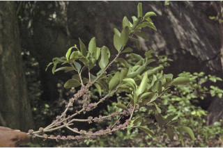
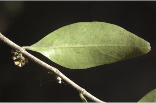
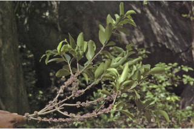
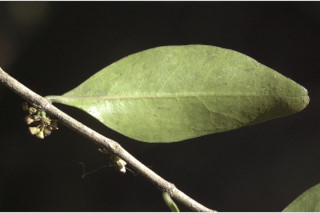

Large spreading shrubs or treelets ca. 4 m tall.
ದೊಡ್ಡ ಗಾತ್ರದ ಹರಡುವ ಪೊದೆಗಳು ಅಥವಾ ಅಂದಾಜು 4 ಮೀ.ಎತ್ತರವುಳ್ಳ ಕಿರುಮರಗಳು.
ഏതാണ്ട് 4 മീറ്റര് ഉയരമുളള, പടര്ന്നുനില്ക്കുന്ന കുറ്റിച്ചെടികളായോ ചെറുമരങ്ങളായോ വളരുന്നു.
பெரிய குத்துச்செடி அல்லது சிறிய மரங்கள், 4 மீ. உயரம் வரை வளரக்கூடியது.
Branchlets terete, glabrous.
ಕಿರುಕೊಂಬೆಗಳು ದುಂಡಾಗಿರುತ್ತವೆ ರೋಮರಹಿತವಾಗಿರುತ್ತವೆ.
അരോമിലമായ, ഉരുണ്ട ഉപശാഖകള്.
சிறிய நுனிக்கிளைகள் குறுக்குவெட்டுத் தோற்றத்தில் வளையமானது, உரோமங்களற்றது.
Leaves simple, opposite, decussate; petiole 0.3-0.4 cm long, planoconvex in cross section, glabrous; lamina 3-9.5 x 0.5-1.9 cm, narrow linear-elliptic to linear-lanceolate, apex acute, base attenuate, margin entire, glabrous, coriaceous; midrib slightly canaliculate above with intramarginal_nerve; secondary and tertiary_nerves obscure.
ಎಲೆಗಳು ಸರಳವಾಗಿದ್ದು, ಕತ್ತರಿಯಾಕಾರದ ಅಭಿಮುಖ ಜೋಡನಾ ವ್ಯವಸ್ಥೆಯ -ಲ್ಲಿರುತ್ತವೆ; ತೊಟ್ಟುಗಳು 0.3 ರಿಂದ 0.4 ಸೆಂ.ಮೀ. ಉದ್ದವಿರುತ್ತವೆ ಮತ್ತು ಅಡ್ಡ ಸೀಳಿದಾಗ ಸಪಾಟ ಪೀನ ಮಧ್ಯದ ಆಕಾರದಲ್ಲಿದ್ದು ರೋಮರಹಿತವಾಗಿರುತ್ತವೆ; ಪತ್ರಗಳು 3-9.5 X 0.5 –1.9 ಸೆಂ.ಮೀ ಗಾತ್ರ ಹೊಂದಿದ್ದು ಸಂಕುಚಿತ ರೇಖಾತ್ಮಕ- ಅಂಡವೃತ್ತದಿಂದ ರೇಖಾತ್ಮಕ-ಭರ್ಜಿಯವರೆಗಿನ ಆಕಾರದಲ್ಲಿದ್ದು ಚೂಪಾದ ತುದಿ ಮತ್ತು ಒಳಬಾಗಿದ ಬುಡವನ್ನುಹೊಂದಿರುತ್ತವೆ;ಅಂಚು ನಯವಾಗಿರುತ್ತದೆ;ಮೇಲ್ಮೈ ರೋಮರಹಿತವಾಗಿದ್ದು ತೊಗಲ್ಲನ್ನೋಲುವ ಮಾದರಿಯಲ್ಲಿರುತ್ತದೆ;ಮಧ್ಯನಾಳ ಮೇಲ್ಭಾಗದಲ್ಲಿ ಅಂತರ ಅಂಚಿನ ನಾಳವನ್ನೊಳಗೊಂಡು ಕಾಲುವೆಗೆರೆ ಸಮೇತವಾಗಿರುತ್ತದೆ; ಎರಡನೇ ಮತ್ತು ಮೂರನೇ ದರ್ಜೆಯ ನಾಳಗಳು ಅಸ್ಪಷ್ಟ.
ലഘുവായ ഇലകള്, സമ്മുഖ, ഡെക്കുസേറ്റ് ക്രമത്തിലാണ്; ഛേദത്തില് ഒരുഭാഗം പരന്നും മറുഭാഗം ഉരുണ്ടുമിരിക്കുന്ന ഘടനയുളള, അരോമിലമായ ഇലഞെട്ടിന് 0.3 സെ.മീ മുതല് 0.4 സെ.മീ വരെ നീളം; പത്രഫലകത്തിന് 3 സെ.മീ മുതല് 9.5 സെ.മീ വരെ നീളവും 0.5 സെ.മീ മുതല് 1.9 സെ.മീ വരെ വീതിയും, ആകൃതി വീതികുറഞ്ഞ-ദീര്ഘവൃത്തം തൊട്ട് രേഖീയ-കുന്താകാരം വരെയാകാം, പത്രാഗ്രം നിശിതമാണ്, പത്രാധാരം നീണ്ടുനേര്ത്താണ്, അരികുകള് അവിഭജിതമാണ്, അരോമിലം, ചര്മ്മില പ്രകൃതം; അന്തര് സീമാന്ത സിരകളോടുകൂടിയ മുഖ്യസിര മുകളില് അല്പ്പം ചാലുളളതാണ്; ദ്വിതീയ ഞരമ്പുകളും ത്രിതീയ ഞരമ്പുകളും അപ്രസക്തമാണ്.
இலைகள் தனித்தவை, எதிரடுக்கமானவை, குறுக்குமறுக்கமானவை; இலைக்காம்பு 0.3-0.4 செ.மீ., நீளமானது, குறுக்குவெட்டுத் தோற்றத்தில் பிளேனோகான்வக்ஸ், உரோமங்களற்றது; இலை அலகு 3-9.5 X 0.5-1.9 செ.மீ., குறுகிய கோட்டு-நீள்வட்ட வடிவம் முதல் கோட்டு-ஈட்டி வடிவானது, அலகின் நுனி கூரியது, அலகின் தளம் அட்டனுவேட், அலகின் விளிம்பு முழுமையானது, உரோமங்களற்றது, கோரியேசியஸ்; மையநரம்பு அலகின் மேற்பரப்பைவிட பள்ளமானது, இண்ட்ராமார்ஜினல் நரம்பு (விளிம்பு நரம்பு) கொண்டது; இரண்டாம் நிலை நரம்புகள் மற்றும் மூன்றாம் நிலை நரம்புகள் கண்களுக்குப் புலப்படாது.
Flowers axillary umbels, blue.
ಹೂಗಳು ನೀಲಿ ಬಣ್ಣ ಹೊಂದಿದ್ದು ಅಕ್ಷಾಕಂಕುಳಿನಲ್ಲಿರುವ ಪೀಠಛತ್ರದಲ್ಲಿರುತ್ತವೆ.
നീലനിറത്തിലുളള പൂക്കള്, കക്ഷീയ ഛത്രമഞ്ജരികളില് ഉണ്ടാകുന്നു.
மலர்கள் இலைக்கோணங்களில் காணப்படும், அம்பல், நீல நிறமானவை.
Berry, globose, black-purple, 0.7 cm across; seed 1.
ಬೆರ್ರಿಗಳು ಗೋಳಾಕಾರದಲ್ಲಿದ್ದು,ಕೆನ್ನೀಲಿ ಬಣ್ಣ ಹೊಂದಿದ್ದು 0.7 ಸೆಂ.ಮೀ. ಅಡ್ಡಗಲದ ಗಾತ್ರದಲ್ಲಿರುತ್ತದೆ ಮತ್ತು ಒಂದು ಬೀಜವನ್ನೊಳಗೊಂಡಿರುತ್ತವೆ.
ഒറ്റവിത്തുളള കായ, 0.7 സെ.മീ കുറുകേയുളള, കറുപ്പ് കലര്ന്ന ഊതനിറത്തിലുള്ള, ഗോളാകാര ബെറിയാണ്.
முழுச்சதைகனி (பெர்ரி), கோளவடிவானது, கருப்பு-பர்புள் நிறமானது, 0.7 செ.மீ. குறுக்களவுடையது; விதை ஒன்றுடையது.


 


